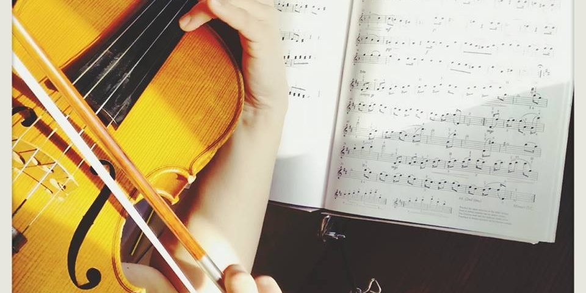

CURSO DE MÚSICA DEL CLASICISMO
Contexto, autores y obras
Nieves González Gil
20 de abril 2021
Contenido
- Introducción al curso
- Estructura
- Formatos desarrollados
- Características
- Objetivos
- Personas a las que va dedicado
- Conclusiones
- Bibliografía
INTRODUCCIÓN AL CURSO
Introducción
- El curso virtual está dedicado a hacer un recorrido de toda la música del Clasicismo (1750-1800, aproximadamente), tanto instrumental como vocal y escénica.
- El curso recorre:
- Los aspectos más relevantes de este período
- Los autores más prolíficos
- La creación de la orquesta clásica e instrumentos
- Análisis de las principales formas y obras
- Obras principales
- El curso está dividido en 7 temas principales:
Estructura
Temas:
- Tema 1: Introducción
- Contexto Histórico y Social
- La Proliferación de Obras Didácticas
- Música en el Ámbito Privado
- Tema 2: Conceptos estilísticos
- Estilo Galante
- Rococó
- Empfindsamer Stil
- Preclasicismo
Temas:
- Tema 3: Domenico Scarlatti
- Producción artística
- Tema 4: Carl Philip Emanuel Bach
- Carácter
- Obra
- Recepción
Temas:
- Tema 5: Los Inicios del Repertorio Sinfónico: las cortes de Milán y Mannheim
- Origen de la Sinfonía
- G.B. Sammartini
- J. Stamitz
- Comienzos del Sinfonismo Vienés
- Tema 6: Johann Christian Bach
- Estilo y Reputación
- Obra
- Tema 7: Joseph Haydn
- Obra
Temas:
- Tema 8: Wolfgang Amadeus Mozart
- El estilo sublime de Salzburgo
- Apuntes
- Tema 9: Música Escénica del Clasicismo
- Presentaciones
- Actividades, rúbrica para evaluar vídeos y bibliografía
FORMATOS DESARROLLADOS
Características
- El curso ha sido creado con la herramienta Exelearning
- Se han añadido dos presentaciones sobre dos óperas de Mozart
- Formato Beamer en PDF generadas con pandoc/LaTeX
- Se ha añadido una presentación sobre la historia de la ópera en este siglo
- Formato HTML usando reveal.js
- Una presentación de introducción general al curso
- Formato pandoc/reveal.js
Características
- Un guión de prácticas y actividades
- Formato PDF generado con pandoc/LaTeX
- Apuntes sobre W.A. Mozart
- Formato EPUB
- Presentación de instrumentos clásicos musicales
- Generada en Padlet

OBJETIVOS
Objetivos principales:
Conocer los distintos períodos musicales del Clasicismo
Conocer los compositores más representativos
Conocer las obras más características del período
Objetivos principales:
Conocer los principales aspectos formales musicales
Analizar una partitura de sonatas y sinfonías clásicas (Forma Sonata)
Adquisición de conocimientos críticos y analíticos en cuanto a una obra musical se corresponde.
PERSONAS A LAS QUE VA DESTINADO
Destinatarios
- Este curso está dedicado a personas generalmente jóvenes, aunque es para todos los públicos, con conocimientos básicos de solfeo y lenguaje musical.
- Alumnos de conservatorios, escuelas de música o conocimientos musicales adquiridos de forma privada.
Destinatarios
- No es necesario conocer la historia de la música, pues en este curso se aprenderán varios conocimientos de la época clasicista. Se pueden hacer en cualquier sistema operativo.

CONCLUSIONES
Conclusiones:
BIBLIOGRAFÍA
Bibliografía:
- Leslie ORREY: La ópera: una breve historia. Barcelona: Destino, 1994.
- The New Grove Dictionary of Opera. Stanley Sadie (ed.). London: Macmillan, 1992, 4 vols.
- de la Motte, Diether (1998). _Tratado de armonía_. Barcelona: Idea Books.
- Downs, Phillip G. (1998). _La música clásica. La era de Haydn, Mozart y Beethoven_. Akal Música.
Bibliografía:
- Alsina, Pep; Frederic Sesé (1994). _La música y su evolución_ (1ra edición). Editorial Graó.
- Honolka, Kurt; Reinhand, Kurt; Stäblein, Bruno; Enge, Hans; Netil, Paul (2005). Edaf, ed. Historia de la música. Madrid.